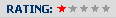
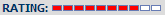
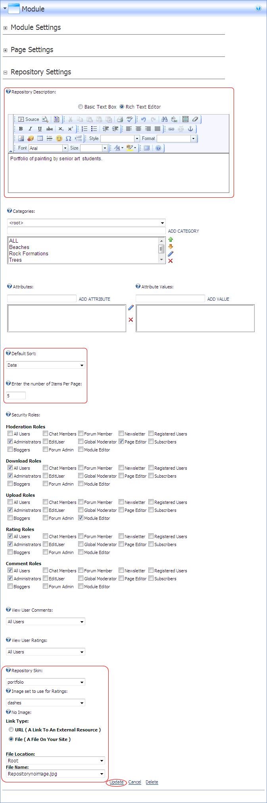

Setting the Repository Design
How to set the layout and design options on the Repository module.
-
- Select the Repository Settings tab.
- In the Repository Description Editor, enter a description for this repository. This description is displayed at the top of the module.
- At Default Sort, select the default field to sort Repository files by. The default setting is Date. Users can modify the sort order using the Sort By field that is displayed on most of the skins provided.
- In the Enter the number of Items Per Page text box, enter the number of items to be displayed on each page of the repository. The default setting is 5.
- At Repository Skin, select the skin for this repository module. The default skin is Default. See "Setting the Repository Skin" for more details.
- At Image set to use for Ratings, select the image to be displayed for ratings from the following options:
- Default: Uses a five star rating scale. 
- Dashes: Uses a ten dash rating scale.  This is default setting.
- At No Image*, select the default image to be displayed where no image is uploaded for an item. See Link Control for more details on selecting images. See "Setting a URL Link" or See "Setting a File Link"
-
Click the Update button.
* Note: When uploaded images are displayed on the Repository module, they appear as a thumbnail image which is scaled down to a uniform width. This width varies between different skins. However the image you select at No Image is not scaled down. In order to provide the best visual presentation on your Repository you should match the width of the No Image to the thumbnail width on selected skin.
Here's a list of the thumbnail width displayed on each skin:
- Articles, Business Cards, and Directory: Images are scaled down to a width of 48 pixels.
- Default, Nifty, and Nifty Toggle: Images appear scaled down to a width of 100 pixels.
- Portfolio: Large images are scaled down a thumbnail width of 175 pixels.
- Slides: Large images are scaled down a thumbnail width of 140 pixels. Note: Default image should be landscape.
- Blog, File List, and Nifty Video: Images are not used on these skins.

Configuring Repository Layout and Design